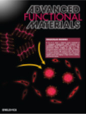

|
ARTICLES
- Mechanism-Guided Design and Synthesis of a Mitochondria-Targeting Artemisinin Analogue with Enhanced Anticancer Activity
Angew. Chem. Intl. Ed., DOI: 10.1002/ange.201607303.
- A Porphyrin-Based Conjugated Polymer for Highly Efficient In Vitro and In Vivo Photothermal Therapy
Small, DOI: 10.1002/smll.201602293.
- Multifunctional AIEgens for Future Theranostics
Small, DOI: 10.1002/smll.201601637.
- Organic Nanoparticles with Aggregation-Induced Emission for Bone Marrow Stromal Cell Tracking in a Rat PTI Model
Small, DOI: 10.1002/smll.201601630.
- Organelle-specific bioprobes based on fluorogens with aggregation-induced emission (AIE) characteristics
Org. Biomol. Chem., DOI: 10.1039/c6ob01414c.
- Biocompatible Red Fluorescent Organic Nanoparticles with Tunable Size and Aggregation-Induced Emission for Evaluation of Blood-Brain Barrier Damage
Adv. Mater., DOI: 10.1002/adma.201601191.
- Specific Light-Up Probe with Aggregation-Induced Emission for Facile Detection of Chymase
Anal. Chem., DOI: 10.1021/acs.analchem.6b02073.
- Far Red/Near-Infrared AIE Dots for Image-Guided Photodynamic Cancer Cell Ablation
ACS Appl. Mater. Interfaces, DOI: 10.1021/acsami.6b06136.
- Encapsulated Conjugated Oligomer Nanoparticles for Real-Time Photoacoustic Sentinel Lymph Node Imaging and Targeted Photothermal Therapy
Small, DOI: 10.1002/smll.201600697.
- An AIE-active fluorescence turn-on bioprobe mediated by hydrogen-bonding interaction for highly sensitive detection of hydrogen peroxide and glucose
Chem. Commun., DOI: 10.1039/C6CC05049B.
- A Photostable Far-Red/Near-Infrared Conjugated Polymer Photosensitizer with aggregation-Induced Emission for Image-Guided Cancer Cell Ablation
Macromolecules, DOI: 10.1021/acs.macromol.6b00958.
- ROS-responsive drug delivery systems
Bioengineering and Translational Medicine, DOI: 10.1002/btm2.10014.
- Decoration of porphyrin with tetraphenylethene: converting a fluorophore with aggregation-caused quenching to aggregation-induced emission enhancement
J. Mater. Chem. B, DOI: 10.1039/C6TB01159D.
- Light-Responsive AIE Nanoparticles with Cytosolic Drug Release to Overcome Drug Resistance in Cancer Cells
Polym. Chem., DOI: 10.1039/C6PY00449K.
- Bioorthogonal Turn-On Probe based on AIEgen for Cancer Cell Imaging and Ablation
Angew. Chem. Intl. Ed., DOI: 10.1002/anie.201601744.
- Structure-Dependent cis/trans Isomerization of Tetraphenylethene Derivatives: Consequences for Aggregation-Induced Emission
Angew. Chem. Intl. Ed., DOI: 10.1002/anie.201600244.
- Real-Time Specific Light-Up Sensing of Transferrin Receptor: Image-Guided Photodynamic Ablation of Cancer Cells through Controlled Cytomembrane Disintegration
Anal. Chem., DOI: 10.1021/acs.analchem.6b00524.
- Rational design of asymmetric red fluorescent probes for live cell imaging with high AIE effects and large two-photon absorption cross sections using tunable terminal groups
Chem. Sci., DOI: 10.1039/C5SC04920B.
- A FRET probe with AIEgen as the energy quencher: dual signal turn-on for self-validated caspase detection
Chem. Sci., DOI: 10.1039/C6SC00055J.
- Peptide-Induced AIEgen Self-Assembly: A New Strategy to Realize Highly Sensitive Fluorescent Light-Up Probes
Anal. Chem., DOI: 10.1021/acs.analchem.6b00023.
- Multifunctional organic nanoparticles with aggregation-induced emission (AIE) characteristics for targeted photodynamic therapy and RNA interference therapy
Chem. Commun., DOI: 10.1039/C5CC07818K.
- Silole-based Red Fluorescent Organic Dots for Bright Two-Photon Fluorescence in vitro Cell and in vivo Blood Vessel Imaging
Small, DOI: 10.1002/smll.201502822.
- Light-Up Probes Based on Fluorogens with Aggregation-Induced Emission Characteristics for Monoamine Oxidase Activity Study in Solution and in Living Cells.
ACS Appl. Mater. Interfaces, DOI: 10.1021/acsami.5b10528.
- A Self-Reporting AIE Probe with a Built-In Singlet Oxygen Sensor for Targeted Photodynamic Ablation of Cancer Cells
Chem. Sci., DOI: 10.1039/C5SC03583J.
- Dual-Targeted Activatable Photosensitizer with Aggregation-Induced Emission (AIE) Characteristics for Image-Guided Photodynamic Cancer Cell Ablation
J. Mater. Chem. B, DOI: 10.1039/C5TB02270C.
- AIEgen based light-up probes for live cell imaging
Science China Chemistry, DOI: 10.1007/s11426-015-5470-2.
- AIEgens for real-time naked-eye sensing of hydrazine in solution and on a paper substrate: structure-dependent signal output and selectivity
J. Mater. Chem. C, DOI: 10.1039/C5TC01496D.
- A fluorescent light-up probe based on AIE and ESIPT processes for b-galactosidase activity detection and visualization in living cells
J. Mater. Chem. B, DOI: 10.1039/c5tb01938a.
- Conjugated polymer and drug co-encapsulated nanoparticles for Chemo- and Photo-thermal Combination Therapy with two-photon regulated fast drug release
Nanoscale,DOI: 10.1039/C4NR06420H.
- Fluorogens with Aggregation Induced Emission: Ideal Photoacoustic Contrast Reagents Due to Intramolecular Rotation
J. Nanosci. Nanotechnol, DOI: 10.1166/jnn.2015.10031.
- Haem-activated promiscuous targeting of artemisinin in Plasmodium falciparum
Nature Communications , doi:10.1038/ncomms10111.
- Synthesis of Imidazole-Based AIEgens with Wide Color Tunability and Exploration of Their Biological Applications
Adv. Funct. Mater., DOI: 10.1002/adfm.201503788.
- Narrow Band Gap Conjugated Polyelectrolytes for Photothermal Killing of Bacteria
J. Mater. Chem. B, DOI: 10.1039/C5TB01118C.
- Light-up Probe for Targeted and Activatable Photodynamic Therapy with Real-time In-situ Reporting of Sensitizer Activation and Therapeutic Responses
Adv. Funct. Mater., DOI: 10.1002/adfm.201502728.
- Silica Shelled and Block Copolymer Encapsulated Red-emissive AIE Nanoparticles with 50% Quantum Yield for Two-photon Excited Vascular Imaging.
Chem. Commun., DOI: 10.1039/C5CC03603H.
- Self-assembled ultrathin titania nanosheets as blocking layers for significantly enhanced photocurrent and photovoltage of dye-sensitized solar cells
J. Mater. Chem. A, DOI: 10.1039/C5TA04877J.
- Cellular and Mitochondria Dual Targeted Organic Dots with Aggregation-Induced Emission Characteristics for Image-Guided Photodynamic Therapy
, DOI: 10.1002/adhm.201500431.
- Tuning the Singlet-Triplet Energy Gap: Unique Approach to Efficient Photosensitizers with Aggregation-Induced Emission (AIE) Characteristics
Chem. Sci., DOI: 10.1039/C5SC01733E.
- Smart Probe for Tracing Cancer Therapy: Selective Cancer Cell Detection, Image-Guided Ablation, and Prediction of Therapeutic Response In Situ
Small, DOI: 10.1002/smll.201501498.
- Graphene Oxide-Assisted Nucleic Acids Assays Using Conjugated Polyelectrolytes-Based Fluorescent Signal Transduction
Anal. Chem., DOI: 10.1021/ac504658a.
- A Highly Sensitive Fluorescent Light-up Probe for Real-Time Detection of Endogenous Protein Target and its Antagonism in Live Cells
J. Mater. Chem. B, DOI: 10.1039/C5TB00819K.
- Far-Red/Near-Infrared Conjugated Polymer Nanoparticles for Long-Term In-Situ Monitoring of Liver Tumor Growth
Adv. Sci., DOI: 10.1002/advs.201500008.
- Single Molecule with Dual Function on Nano-gold: Biofunctionalized Nano-Construct for In Vivo Photoacoustic Imaging and SERS Biosensing
Adv. Funct. Mater. , DOI: 10.1002/adfm.201404341.
- Conjugated Polymer Microparticles for Selective Cancer Cell Imaging and Photothermal Therapy
J. Mater. Chem. B, DOI: 10.1039/C4TB01590H.
- Performance enhancement of Perovskite-Sensitized Mesoscopic Solar Cells using Nb-doped TiO2 Compact Layer
NanoRes, DOI: 10.1007/s12274-015-0711-4.
- Fluorescent Light-up Nanoparticle Probe with Aggregation-induced Emission Characteristics and Tumor-acidity Responsiveness for Targeted Imaging and Selective Suppression of Cells
Mater. Horiz., DOI: 10.1039/C4MH00164H.
- Hybridization induced fluorescence turn-on of AIEgen-oligonucleotide conjugates for specific DNA detection
RSC Adv., DOI: 10.1039/C5RA00322A.
- Investigation of Interfacial Charge Separation at PbS QDs/(001) TiO2 Nanosheets Heterojunction Solar Cell
Part. Part. Syn. Character., DOI: 10.1002/ppsc.201400210.
- A Photoactivatable AIE Polymer for Light-Controlled Gene Delivery: Concurrent Endo/Lysosomal Escape and DNA Unpacking
Angew. Chem. Intl. Ed., DOI: 10.1002/anie.201503640.
- Conjugated Polymer Nanodots as Ultrastable Long-Term Trackers to Understand Mesenchymal Stem Cell Therapy in Skin Regeneration
Adv. Funct. Mater., 25, 4263–4273.
- Molecular photoacoustic imaging of breast cancer using an actively targeted conjugated polymer
International Journal of Nanomedicine, 10, 387-397.
- A light-up probe with aggregation-induced emission characteristics (AIE) for selective imaging, naked-eye detection and photodynamic killing of Gram-positive bacteria
Chem. Commun., 51, 12490-12493.
- A highly sensitive fluorescent light-up probe for real-time detection of the endogenous protein target and its antagonism in live cells
J. Mater. Chem. B, 3, 5933-5937.
- Image-guided combination chemotherapy and photodynamic therapy using a mitochondria-targeted molecular probe with aggregation-induced emission characteristics
Chem. Sci, 6, 4580-4586.
- Effect of AIE Substituents on the Fluorescence of Tetraphenylethene-Containing BODIPY Derivatives
ACS Appl. Mater. Interfaces, 7, 15168-15176.
- Biocompatible green and red fluorescent organic dots with remarkably large two-photon action cross sections for targeted cellular imaging and real-time intravital blood vascular visualization
ACS Appl. Mater. Interfaces, 7, 14965-14974.
- Improvement in polymer solar cell performance and eliminating light soaking effect via UV-light treatment on conjugated polyelectrolyte interlayer
Organic Electronics, 25, 105–111.
- Biocompatible nanoparticles based on diketo-pyrrolo-pyrrole (DPP) with aggregation-induced Red/NIR emission for in vivo two-photon fluorescence imaging
Adv. Funct. Mater., 25, 2857-2866.
- A platinum prodrug conjugated with a photosensitizer with aggregation-induced emission (AIE) characteristics for drug activation monitoring and combinatorial photodynamic-chemotherapy against cisplatin resistant cancer cells
Chem. Commun., 51, 8626-8629.
- Specific Light-up Bioprobe with Aggregation-Induced Emission and Activatable Photoactivity for Targeted and Image-Guided Photodynamic Ablation of Cancer Cells
Angew Chem. Int. Ed., 54, 1780-1786.
- A Fluorescent Light-up Platform with “AIE + ESIPT” Characteristics for Multi-target Detection both in Solution and on Paper Strip
J. Mater. Chem. B, 3, 1590-1596.
- A Multifunctional Probe with Aggregation-Induced Emission Characteristics for Selective Fluorescence Imaging and Photodynamic Killing of Bacteria Over
Advanced Healthcare Materials, DOI: 10.1002/adhm.201400654
- A Cell Apoptosis Probe Based on Fluorogen with Aggregation-induced Emission Characteristics
ACS Appl. Mater. Interfaces, 7, 4875–4882.
- Specific Light-up Bioprobes based on AIEgen Conjugates
Chem. Soc. Rev. , DOI: 10.1039/C4CS00444B
- Biocompatible Conjugated Polymer Nanoparticles for Efficient Photothermal Tumor Therapy
Small, DOI: 10.1002/smll.201402092
- Benzothiadiazole Containing Conjugated Polyelectrolytes for Biological Sensing and Imaging
ACS Appl. Mater. Inter., DOI: 10.1002/macp.201400408
- A Conjugated Polymer with Rigid Donor Poly(para-divinylphenylamino) Backbone and Pendant Cyanoacetic Acid Acceptor for Dye Sensitized Solar Cells
J. Poly. Sci., Part A., 52, 2958–2965.
- Organometallic Conjugated Polyelectrolytes: Synthesis and Applications
J. Inorg. Org. Polym. Mater. ,25, 27-36.
- A Small Molecule FRET Reporter for Real-time Visualization of Cell-Surface Proteolytic Enzyme Functions
Angew. Chem. Intl. Ed., 53, 14357–14362.
- Red-emissive Chemiluminescent Nanoparticles with Aggregation Induced Emission Characteristics for in vivo Hydrogen Peroxide Imaging
art. Part. Syst. Charact., 31, 1238–1243
- A Ratiometric Fluorescent Probe Based on ESIPT and AIE Processes for Alkaline Phosphatase Activity Assay and Visualization in Living Cells
ACS Appl. Mater. Interfaces, 6, 17245–17254.
- Organic Dots with Aggregation-induced Emission for Tracking Bone Marrow Stromal Cell in the Rat Ischemic Stroke Model
Chem. Commun.,50, 15136-15139.
- Cell Imaging with Red Fluorescent light-up probe based on environment-sensitive fluorogen with intramolecular charge transfer characteristics
Chem. Commun.,50, 9497-9500.
- NIR Photoregulated Chemo- and Photodynamic Cancer Therapy Based on Conjugated Polyelectrolyte-drug Conjugate Encapsulated Upconversion Nanoparticles
Nanoscale, 6, 11259-11272.
- Photoanode based on (001) oriented Anatase Nanoplatelets for Organic-inorganic Lead Iodide Perovskite Solar Cell
Chem. Mater., 26, 4675–4678.
- Self-Assembled Nanoparticles Based on PEGylated Conjugated Polyelectrolyte and Drug Molecules for Image-Guided Drug Delivery and Photodynamic Therapy
ACS Appl. Mater. Interfaces, 6, 14903–14910.
- FluorogenPeptide Conjugates with Tunable Aggregation-Induced Emission Characteristics for Bioprobe Design
ACS Appl. Mater. Interfaces, 6, 14302–14310.
- Targeted Theranostic Prodrug Based on an Aggregation-Induced Emission (AIE) Luminogen for Real-Time Dual-Drug Tracking
Chem. Commun., 50, 11465-11468.
- A 2D Metal-Organic Framework with Wide Channels and Responsive Turn-On Fluorescence for the Chemical Sensing of Volatile Organic Compounds
J. Am. Chem. Soc., 136, 7241–7244.
- Controlled Growth of CuS on Electrospun Carbon Nanofibers as an Efficient Counter Electrode for Quantum Dot-Sensitized Solar Cells
J. Phys. Chem. C, 118, 16526–16535.
- Bright Quantum-Dot-Sized Single-Chain Conjugated Polyelectrolyte Nanoparticles: Synthesis, Characterization and Application for Specific Extracellular Labeling and Imaging
Small, 10, 3110–3118.
- Polymer-encapsulated Organic Nanoparticles for Fluorescence and Photoacoustic Imaging
Chem. Soc. Rev., 43, 6570-6597.
- Red Emissive Biocompatible Nanoparticles from Tetraphenylethene-decorated BODIPY Luminogens for Two-photon Excited Fluorescence Cellular Imaging and Mouse Brain Blood Vascular Visualization
art. Part. Syst. Charact.,31, 481–491
- Conjugated polymer nanoparticles for photoacoustic vascular imaging
Poly. Chem., 5, 2854-2862.
- Self-Assembly-Induced Far-Red/Near-Infrared Fluorescence Light-Up for Detecting and Visualizing Specific Protein–Peptide Interactions
ACS Nano, 8, 1475–1484
- Micelle/Silica Co-Protected Conjugated Polymer Nanoparticles for Two-Photon Excited Brain Vascular Imaging
Chem. Mater., 26, 1878-1880.
- Water-Soluble Bioprobe with Aggregation-Induced Emission Characteristics for Light-up Sensing of Heparin
J. Chem. Mater. B, 2, 4134-4141.
- Distinct Optical and Kinetic Responses from E/Z Isomers of Caspase Probes with Aggregation-Induced Emission Characteristics
J. Chem. Mater. B, 2, 4363-4370.
- Tumor-responsive Fluorescent Light-up Probe Based on Gold Nanoparticle/Conjugated Polyelectrolyte Hybrid
Small, 10, 1967-1975
- Bright Quantum-Dot-Sized Single-Chain Conjugated Polyelectrolyte Nanoparticles: Synthesis, Characterization and Application for Specific Extracellular Labeling and Imaging.
Small, DOI: 10.1002/smll.201303505.
- Fluorescent light-up probe with “AIE + ESIPT” characteristics for specific detection of lysosomal esterase
J. Mater. Chem. B, 2, 3438-3442.
- A fluorescent light-up probe with AIE characteristics for specific mitochondrial imaging to identify differentiating brown adipose cells
Chem. Commun, DOI: 10.1039/C4CC00452C.
- Ultrasmall Phosphorescent Polymer Dots for Ratiometric Oxygen Sensing and Photodynamic Cancer Therapy
Adv. Funct. Mater. , DOI: 10.1002/adfm.201400647.
- A Dual-Mode Fluorescence “Turn-on” Biosensor Based on an Aggregation-Induced Emission Luminogen
J. Mater. Chem. B, 2, 1717-1723.
- Targeted Theranostic Platinum(IV) Prodrug with a Built-in AIE Light-up Apoptosis Sensor for Noninvasive Early Evaluation of Its Therapeutic Responses In-situ
J. Am. Chem. Soc, 136, 2546-2554.
- Targeted Theranostic Platinum(IV) Prodrug Containing a Luminogen with Aggregation-Induced Emission (AIE) Characteristics for In-situ Situ Monitoring of Drug Activation
Chem. Commun., 50, 3868-3870.
- Reversible Photoswitching Conjugated Polymer Nanoparticles for Cell and Tumor Imaging
Nanoscale, 6, 4141-4147.
- 4,9-Dihydro-4,4,9,9-Tetrahexyl-s-indaceno[1,2-b:5,6-b’]-dithiophene as a π-spacer of Donor-π-acceptor Dye and its Photovoltaic Performance with Liquid and Solid-state Dye-sensitized Solar Cells
Org. Letter, 16, 106-109.
- Red Emissive Biocompatible Nanoparticles from Tetraphenylethene-decorated BODIPY Luminogens for Two-photon Excited Fluorescence Cellular Imaging and Mouse Brain Blood Vascular Visualization
Part. Part. Syst. Charact., 31, 481-491.
- Near-Infrared Fluorescence Amplified Organic Nanoparticles with Aggregation-Induced Emission Characteristics for in Vivo Imaging
Nanoscale, 6, 939-945.
- Morphologically Induced Polychromism of MEH-PPV Nanoparticles Prepared Using Amphiphilic Comb-polymer as Encapsulation Matrix
Eur. Poly. J., 50, 46-53.
- Controlled Growth of CuS on Electrospun Carbon Nanofibers as an Efficient Counter Electrode for Quantum Dot-Sensitized Solar Cells
J. Phys. Chem. C, DOI: 10.1021/jp4117529.
- Solid-state D102 dye sensitized/poly(3-hexylthiophene) hybrid solar cells on flexible Ti substrate
Renewable Energy, 22-28.
- Bioprobes Based on AIE Fluorogens
Acc. Chem. Res., 46, 2441–2453.
- Bright far-red/near-infrared fluorescent conjugated polymer nanoparticles for targeted imaging of HER2-positive cancer cells
Polym. Chem., 4, 4326-4334.
- Highly Emissive PEG-encapsulated conjugated polymer nanoparticles
Nanoscale, 4, 5694-5702.
- Emerging applications of conjugated polymers in molecular imaging
Phys. Chem. Chem. Phys., 15, 17006-17015.
- Graphene Oxide Enhanced Fluorescence of Conjugated Polyelectrolytes with Intramolecular Charge Transfer Characteristics
Chem. Commun., 49, 4818-4820.
- Bright Far-Red/Near-Infrared Conjugated Polymer Nanoparticles for In Vivo Bioimaging
Small, 9, 3093-3102.
- Single Molecular Hyperbranched Nanoprobe for Fluorescence and Magnetic Resonance Dual Modal Imaging
Poly. Chem., 4, 1517-1524.
- Visual Sensing with Conjugated Polyelectrolytes
Chem. Sci., 4, 1377-1394.
- Cationic Polyfluorenes with Phosphorescent Iridium(III) Complexes for Time-resolved Luminescent Biosensing and Fluorescence Lifetime Imaging
Adv. Funct. Mater., 23, 3268-3276.
- A Ratiometric Probe Composed of an Anionic Conjugated Polyelectrolyte and a Cationic Phosphorescent Iridium(III) Complex for Time-resolved Detection of Hg(II) in Aqueous Media
Macromol. Biosci., 13, 1339–1346.
- Light-Up Bioprobe with Aggregation-Induced Emission Characteristics for Real-Time Apoptosis Imaging in Target Cancer Cells
J. Mater. Chem. B, 2, 231-238.
- A Hybrid Sensor using Gold Nanoparticles and Conjugated Polyelectrolytes for Studying Sequence Rule in Protein-DNA Interactions
ACS Mater. Interface, 5, 12725-12734.
- Fabrication of Flexible Plastic Solid-State Dye-Sensitized Solar Cells Using Low Temperature Techniques
J Phys. Chem. C., 5, 2269-2273.
- Ultrabright Organic Dots with Aggregation-Induced Emission Characteristics for Real-Time Two-Photon Intravital Vasculature Imaging
Adv. Mater., 25, 6083-6088.
- Ultra-Photostable and Highly Emissive Organic Fluorescent Dots with Aggregation-Induced Emission Characteristics for Noninvasive Long-term Cell Imaging
Adv. Funct. Mater., In press.
- Rational Design of Fluorescent Light-Up Probes Based on an AIE Luminogen for Targeted Intracellular Thiol Imaging
Chem. Commun., 50, 295–297.
- Pegylated Conjugated Oligomers For Targeted Two-Photon Fluorescence Imaging Of Cancer Cells
J. Mol. Eng. Mater., 1, 1340011.
- Organic Dots with Aggregation-Induced Emission (AIE dots) Characteristics for Dual-Color Cell Tracing
Chem. Mater., 25, 4181-4187.
- Fluorescent Light-up Probe with Aggregation-Induced Emission Characteristics for Alkaline Phosphatase Sensing and Activity Study
ACS Appl. Mater. Interf., 5, 8784–8788.
- Fluorescent Light-up Probe with Aggregation-induced Emission Characteristics for In Vivo Imaging of Cell Apoptosis,
Org. Biomol. Chem., 11, 7289–7296.
- Biocompatible Organic Dots with Aggregation-induced Emission for In vitro and In vivo Fluorescence Imaging
Sci. China Chem., 56, 1228-1233.
- Photoluminescent Graphene Quantum Dots from Polycyclic Aromatic Hydrocarbon for Bioimaging and Sensing of Fe3+ and Hydrogen Peroxide,
art. Part. Syst. Charact., in press.
- Specific Nucleic Acid Detection Based on Fluorescent Light-up Probe from Fluorogens with Aggregation-Induced Emission Characteristics
RSC Adv., 3, 10135-10138.
- Gadolinium-Functionalized Aggregation-Induced Emission (AIE) Dots as Dual-Modality Probes for Cancer Metastasis Study
Adv. Healthcare Mater., 2, 1600-1605.
- Fluorescent Sensors
Macromol. Rapid Commun. 2013, 34, 704-704.
- Hyperbranched Conjugated Polyelectrolytes for Biological Sensing and Imaging
Macromol. Rapid Commun., 34, 705-715.
- A Facile Strategy towards Conjugated Polyelectrolyte with Oligopeptide as Pendants for Biological Applications
ACS Appl. Mater. Interfaces, 5, 4511-4515.
- A Water-soluble Conjugated Polymer Brush with Multihydroxy Dendritic Side Chains
Polym. Chem., 4, 5243-5251.
- Polyethyleneimine-Grafted Hyperbranched Conjugated Polyelectrolytes: Synthesis and Imaging of Gene Delivery
Polym. Chem., 4, 5297-5304.
- Facile Fabrication of Co-sensitized Plastic Dye-Sensitized Solar Cells Using Multiple Electrophoretic Deposition
Nanoscale, 5, 2269-2273.
- Fluorescence Turn-on Detection of Live Cell Apoptosis Using a Hyperbranched Conjugated Polyelectrolyte
Med. Chem. Commun., 4, 554-558.
- Eccentric Loading of Fluorogen with Aggregation-Induced Emission in PLGA Matrix Increases Nanoparticle Fluorescence Quantum Yield for Targeted Cellular Imaging
Small, 9, 2012-2019.
- Core/shell PbSe/PbS QDs TiO2 Heterojunction Solar Cell
Adv. Funct. Mater., 23, 2736-2741.
- Conjugated Polymer Amplified Far-Red/Near-Infrared Fluorescence from Nanoparticles with Aggregation-Induced Emission Characteristics for Targeted in Vivo Imaging
Adv. Healthcare Mater., 2, 500-507.
- A Bright Far-Red and Near-Infrared Fluorescent Conjugated Polyelectrolyte with Quantum Yield Reaching 25%
Chem. Commun., 49, 1491-1493.
- Organic Sensitizers with Bridged Triphenyl Amine Donor Units for Efficient Dye-sensitized Solar Cells
Adv. Energy Mater., 3, 200-205.
- Mesoscopic CH3NH3PbI3/TiO2 hetero-junction solar cells
J. Am. Chem. Soc., 134, 17396-17399.
- Real-time Monitoring of Cell Apoptosis and Drug Screening Using Fluorescent Light-up Probe with Aggregation-Induced Emission Characteristics
J. Am. Chem. Soc., 134, 17972-17981.
- Fluorescence Bioimaging with Conjugated Polyelectrolytes
Nanoscale., 4, 6150-6165.
- Silver Nanocube-Enhanced Far-Red/Near-Infrared Fluorescence of Conjugated Polyelectrolyte for Cellular Imaging
Langmuir, 28, 11302-11309.
- Hyperbranched Conjugated Polyelectrolyte for Dual-Modality Fluorescence and Magnetic Resonance Cancer Imaging
Small, 8, 3523-3530.
- Lipid-PEG-folate Encapsulated Nanoparticles with Aggregation Induced Emission Characteristics: Cellular Uptake Mechanism and Two-photon Fluorescence Imaging
Small, 8, 3655-3663.
- Specific Detection of Integrin αvβ3 by Light-up Bioprobe with Aggregation-Induced Emission Characteristics
J. Am. Chem. Soc., 134, 9569-9572
- Facile Synthesis of Stable and Water-Dispersible Multi-hydroxy Conjugated Polymer Nanoparticles with Tunable Size by Dendritic Crosslinking
ACS Macro. Lett., 1, 927-932.
- Conjugated Polymer Based Nanoparticle as a Dual-modal Probe for Targeted In Vivo Fluorescence and Magnetic Resonance Imaging
Adv. Funct. Mater., 22, 3107-3115.
- PEGylated Conjugated Polyelectrolytes Containing 2,1,3-Benzoxadiazole Unit for Targeted Cell Imaging
Poly. Chem., 3, 1567-1575.
- Highly Emissive PEG-Encapsulated Conjugated Polymer Nanoparticles
Nanoscale, 4, 5694-5702.
- Glycosylated Star-Shaped Conjugated Oligomer for Targeted Two-Photon Fluorescence Imaging
Chem. Eur. J., 3, 2464-2470.
- Pyrene-Based Water Dispersible Orange Emitter for One and Two-Photon Fluorescence Cellular Imaging
Poly. Chem., 3, 2464-2470.
- Aggregation-Induced Red-NIR Emission Organic Nanoparticles as Effective and Photostable Fluorescent Probe for Bioimaging
J. Mater. Chem., 22, 15128-15135.
- Bridged-Triarylamine Starburst Oligomers as Hole Transporting Materials for Electroluminescent Devices
J. Mater. Chem., 22, 15397-15404
- A Tetraphenylethene-based Red Luminophor for An Efficient Non-doped Electroluminescence Device and Cellular Imaging
J. Mater. Chem., 22, 11018-11021.
- Paper-Based Fluoroimmunoassay for Rapid and Sensitive Detection of Antigen
RSC Adv., 2, 3878-3884.
- High Performance Plastic Dye-sensitized Solar Cells Based on Low-cost Commercial P25 TiO2 and Organic dye
ACS Appl. Mater. & Inter., 4, 1709-1715.
- Biocompatible Nanoparticles with Aggregation-Induced Emission Characteristics as Far-Red/Near-Infrared Fluorescent Bioprobes for in Vitro and in Vivo Imaging Applications
Adv. Funct. Mater., 22, 771-779.
- Visual Detection of Single Nucleotide Polymorphism using Cationic Conjugated Polyelectrolyte
Langmuir, 28, 889-895.
- High Efficiency QDs Heterojunction Solar Cell Using Anatase (001) TiO2 Nanosheets
Adv. Mater., 24, 2202-2206.
- Voltage Enhancement in Dye Sensitized Solar Cell Using (001)-Oriented Anatase TiO2 Nanosheets
J. Solid. State. Electrochem., 16, 2993-3001.
- Enhanced Conversion Efficiency for Flexible Dye-Sensitized Solar Cells by Optimization of Nanoparticle Size with Electrophoretic Deposition Technique
RSC Adv., 2, 7074-7080.
- Transfer of Asymmetric Free-Standing TiO2 Nanowire Films for High Efficiency Flexible Dye-Sensitized Solar Cells
RSC Adv. 2012, 2, 7656-7659.
- Efficient flexible dye-sensitized solar cells fabricated by transferring photoanode with a buffer layer
RSC Adv., 2, 6393-6396.
- Light Controlled Assembling of Iodine-Free Dye-Sensitized Solar Cells with Poly(3,4-ethylenedioxythiophene) as Hole Conductor Reaching 7.1% Efficiency
Phys. Chem. Chem. Phys., 14, 7098-7103.
- High-performance Hybrid Solar Cells Employing Metal-free Organic Dye Modified TiO2 as Photoelectrode
Applied Energy, 90, 305-308.
- Star-Shaped Glycosylated Conjugated Oligomer for Two-Photon Fluorescence Imaging of Live Cells
Chem. Mater., 23, 4428-4434.
- A Graphene/Conjugated Oligomer Hybrid Probe for Light-up Sensing of Lectin and Escherichia coli
Adv. Mater., 23, 4386-4391.
- Affibody-Attached Hyperbranched Conjugated Polyelectrolyte for Targeted Fluorescence Imaging of HER2-Positive Cancer Cell
Biomacromolecules.,12, 2966–2974.
- A Butterfly-shaped Conjugated Oligoelectrolyte/Graphene Oxide Integrated Assay for Light-Up Visual Detection of Heparin
Anal. Chem., 83, 7849-7855.
- Herceptin Functionalized Polyhedral Oligomeric Silsesquioxane - Conjugated Oligomers - Silica/Iron Oxide Nanoparticles for Tumor Cell Sorting and Detection
Biomaterials., 32, 8226-8233.
- Conjugated Oligoelectrolyte-Polyhedral Oligomeric Silsesquioxane Loaded pH-Responsive Nanoparticles for Targeted Fluorescence Imaging of Cancer Cell Nucleus
Chem. Commun., 47, 9837-9839.
- Application of Poly(3-hexylthiophene) functionalized with an Anchoring Group in Dye Sensitized Solar Cells
Macromol. Rapid Commun., 32, 1190–1194.
- High Performance Solid-state Organic Dye Sensitized Solar Cells with P3HT as Hole Transporter
J. Phys. Chem. C, 115, 7038-7043.
- Phalloidin-Functionalized Hyperbranched Conjugated Polyelectrolyte for Filamentous Actin Imaging in Living Hela Cells
Chem. Mater., 23,2113–2119
- Folic acid-functionalized Two-photon Absorbing Nanoparticles for Targeted MCF-7 Cancer Cell Imaging
Chem. Commun., 47, 7323-7325.
- Water-soluble Polyfluorene Homopolymers and Copolymers: Synthesis, Characterization and Their Applications in DNA Sensing
Curr. Org. Chem. 2011, 15, 446-464.
- Metal-Enhanced Fluorescence of Conjugated Polyelectrolytes with Self-assembled Ag Nanoparticle Platforms
J. Phys. Chem. B., in press.
- Conjugated Polymer Loaded Nanospheres with Surface Functionalization for Simultaneous Discrimination of Different Live Cancer Cells under Single Wavelength Excitation
Anal. Chem., 83, 2125–2132.
- Conjugated Polyelectrolytes for Label-Free Visual Detection of Heparin
Sci. China Chem., 54, 4567-4574.
- Polyhedral Oligomeric Silsesquioxanes-containing Conjugated Polymer Loaded PLGA Nanoparticles with Trastuzumab (Herceptin®) Functionalization for HER2-positive Cancer Cell Detection
Adv. Funct. Mater., 21, 287-294.
- Recent Advances in Conjugated Polyelectrolytes for Emerging Optoelectronic Applications
Chem. Mater., 23, 501-515.
- Conjugated Polyelectrolyte as Signal Amplifier for Fluorogenic Probe based Enzyme Activity Study
Polym. Chem., 2, 417-421.
- Homogeneous Detection of Trypsin in Protein Mixtures Based on Fluorescence Resonance Energy Transfer between Anionic Conjugated Polymer and Fluorescent Probe
Macromol. Rapid Commun., 31, 1060-1064.
- Multicolor Conjugated Polyelectrolyte/Peptide Complexes as Self-Assembled Nanoparticles for Receptor-Targeted Cellular Imaging
Chem. Mater., 22, 6736-6741.
- Mannose-substituted Conjugated Polyelectrolyte and Oligomer as an Intelligent Energy Transfer Pair for Label-free naked-eye Sensing of Concanavalin
A. Macromolecules,, 43, 9690-9697.
- Freddy Boey, Wei Huang*, Hua Zhang*. Amphiphilic Graphene Composites
Angew. Chem. Int. Ed., 49, 9426-9429.
- A Strategy for Precision Engineering of Nanoparticles of Biodegradable Copolymers for Quantitative Control of Targeted Drug Delivery
Biomaterials, 31, 9145-9155.
- Nanostructured Tools for Developing SERS based ELISA Analogues
Adv. Mater., 22, 4954-4958.
- Conjugated Polyelectrolyte Amplified Bead Array for DNA Detection with Zeptomole Sensitivity and Single Nucleotide Polymorphism Selectivity
Adv. Funct. Mater., 20, 2597-2604.
- Conjugated Polyelectrolyte Based Fluorescence Turn-on Assay for Real-time Monitoring of Protease Activity
Anal Chem., 82, 8604-8610.
- Conjugated Oligoelectrolyte Harnessed Polyhedral Oligomeric Silsesquioxane as Light-Up Hybrid Nanodot for Two-Photon Fluorescence Imaging of Cellular Nucleus
Adv. Mater., 22, 4186-4189.
- A Molecular Brush Approach to Enhance Quantum Yield and Suppress Nonspecific Interactions of Conjugated Polyelectrolyte for Far-Red/Near-Infrared Fluorescence Targeted Cell Imaging
Adv. Funct. Mater., 20, 2770-2777.
- An Efficient Organic Dye-sensitized Solar Cell with in-situ Polymerized Poly(3,4-ethylenedioxythiophene) as Hole Transporting Material
Adv. Mater. 2010, 22, e150-e154.
- Anatase Mesoporous TiO2 Nanofibers with High Surface Area for Solid-state Dye-sensitized Solar Cells
Small, 2010, 6, 2176-2182.
- Solid-state Dye-sensitized Solar Cells with Conjugated Polymer as Hole-transporting Materials
Macromol. Chem. Phys., 212, 15-23.
- Electrophoretic Deposition of Pt Nanoparticles on Plastic Substrates as Counter Electrode for Flexible Dye-Sensitized Solar Cells
J. Power Sources, 196, 2422-2426.
- Electrophoretic Deposition of ZnO Photoanode for Plastic Dye-Sensitized Solar Cells
Electrochem. Commun., 12, 1241-1244.
- Anionic Conjugated Polyelectrolyte with Aptamer-Functionalized Silica Nanoparticles for Label-free Naked-eye Detection of Lysozyme in Protein Mixtures
Langmuir, 26, 10025-10030.
- Water-soluble Conjugated Polymers as the Platform for Protein Sensors
Polymer Chem., 1, 252-259.
- Conjugated Polyelectrolyte Functionalized Reduced Graphene Oxide with Excellent Solubility and Stability in Polar Solvents
Small, 6, 663-669.
- Conjugated Polyelectrolyte-Metal Nanoparticle Platforms for Optically-Amplified DNA Detection
Adv. Mater., 656-659.
- Cationic Oligofluorene Substituted POSS as Light-Harvesting Unimolecular Nanoparticle for Fluorescence Amplification in Cells
Adv. Mater., 22, 643-646.
- Folic Acid Conjugated Nanoparticles of Mixed-Lipid-Monolayer Shell and Biodegradable-Polymer-Core for Targeted Delivery of Docetaxel
Biomaterials, 31, 330-338.
- Fluorescence Turn-on Responses of Anionic and Cationic Conjugated Polymers toward Proteins: Effect of Electrostatic and Hydrophobic Interactions (Cover picture)
J. Phys. Chem. B., 114, 3077-3084.
- Conjugated Polyelectrolyte Blend as Perturbable Energy Donor-Acceptor Assembly for Multicolor Fluorescence Responses to Proteins.
Chem. Commun., 1470-1472.
- Naked-Eye Detection and Quantification of Heparin in Serum with a Cationic Polythiophene (highlighted by ACS as news: Naked-eye colorimetric analysis of heparin and its derivatives, Anal. Chem. 2010, 82 (5), 1570)
Anal. Chem., 82, 4, 1326-1333.
- Generic Strategy of Preparing Fluorescent Conjugated Polymer Loaded Poly(DL-lactide-co-glycolide) Nanoparticles for Targeted Cell Imaging
Adv. Funct. Mater., 19, 3535-3542.
- Fluorescent Single-Molecular Core-Shell Nanospheres of Hyperbranched Conjugated Polyelectrolyte for Live-Cell Imaging
Chem. Mater., 21, 3816-3822.
- Design and Synthesis of Charge-Transfer-Based Conjugated Polyelectrolytes as Multicolor Light-Up Probes
Macromolecules., 42, 5933-5940.
- Conjugated Polyelectrolyte Sensitized Fluorescent Detection of Thrombin in Blood Serum Using Aptamer-Immobilized Silica Nanoparticles as the Platform
Langmuir, 25, 12787-12793.
- Conjugated Polymer as a Signal Amplifier for Novel Silica Nanoparticle-based Fluoroimmunoassay
Biosen. Bioelectron., 24, 3293-3298.
- Conjugated Polyelectrolyte Amplified Thiazole Orange Emission for Label Free Sequence Specific DNA Detection with Single Nucleotide Polymorphism Selectivity.
Anal. Chem., 81, 4099-4105.
- Peptide Mediated Energy Transfer between an Anionic Water-Soluble Conjugated Polymer and Texas Red Labeled DNA for Protease and Nuclease Activity Study
Anal. Chem., 81, 3731-3737.
- Combinatorial Energy Transfer between an End-Capped Conjugated Polyelectrolyte and Chromophore-Labeled PNA for Strand-Specific DNA Detection
Macromol. Rapid Commun., 30, 1645-1650.
- Cationic Conjugated Polymer/Heparin Interpolyelectrolyte Complexes for Heparin Quantification
Macromol. Chem. Phys., 210, 1195-1200.
- Intercalating Dye Harnessed Cationic Conjugated Polymer for Real-time Naked-eye Recognition of Double-Stranded DNA in Serum
Adv. Funct. Mater., 19, 1371-1378.
- Amplified Fluorescence Turn-on Assay for Mercury (II) Detection based on Conjugated Polymer and Silica Nanoparticles.
Macromol. Rapid Commun., 30, 498-503.
- Fluorescence Resonance Energy Transfer between an Anionic conjugated Polymer and a Dye-labeled Lysozyme Aptamer for Specific Lysozyme Detection
Chem. Commun., 17, 2284-2286.
- Bridged Triphenylamine Based Molecules with Large Two-Photon Absorption Cross Sections in Organic and Aqueous Media
Chem. Commun., 8, 920-922.
- Conjugated Polyelectrolyte as Light-Up Macromolecular Probe for Heparin Sensing
Adv. Funct. Mater., 19, 277-284.
- Highly Efficient Nanoporous TiO2-polythiophene Hybrid Solar Cells Based on Interfacial Modification Using A Metal-free Organic Dye
Adv. Mater., 21, 994-1000.
- Facile Construction of Nanofibrous ZnO Photoelectrode for Dye-sensitized Solar Cell Applications
Appl. Phys. Lett., 95, 043304-7.
- A Triphenylamine based Conjugated Polymer with Donor-pi-Acceptor Architecture as Organic Sensitizer for Dye-sensitized Solar Cells
Macromol. Rapid Commun., 30, 1533-1537.
- Asymmetric Fluorescence Quenching of Dual-Emissive Porphyrin-Containing Conjugated Polyelectrolytes for Naked-Eye Mercury Ion Detection
Macromolecules, 41, 8380-8387.
- Fluorescent Detection of ATP based on signaling DNA Aptamer Attached Silica Nanoparticles
Nanotechnology, 19, 415605-415610
- A multicolor cationic Conjugated Polymer for Naked-eye Detection and Quantification of Heparin
Macromolecules, 41, 6636-6640.
- Optimization of Interactions between a Cationic Conjugated Polymer and Chromophore-Labeled DNA for Optical Amplification of Fluorescent Sensors
J. Phys. Chem. B., 112, 9295-9300.
- Highly Sensitive and Selective Detection of Hg2+ in Aqueous Solution with Mercury Specific DNA and Sybr
Green I. Chem. Commun., 4759-4761.
- Optimizing the Cationic Conjugated Polymer Sensitized Fluorescent Signal of Dye Labeled Oligonucleotide for Biosensor Applications.
Biosen. Bioelectron., 24, 1067-1073.
- Highly Sensitive Oligonucleotide-Based Fluorometric Detection of Mercury (II) in Aqueous Media
Biosen. Bioelectron., 24, 756-760.
- ATP Detection Using a Label-Free DNA Aptamer and a Cationic Tetrahedralfluorene
Analyst., 133, 1593-1598.
- Effect of Charge Density on Energy Transfer Properties of Cationic Conjugated Polymers.
Adv. Funct. Mater., 18, 1321-1328.
- Synthesis, Characterization and Application of Cationic Water-soluble Oligofluorenes in DNA Hybridization Detection
Chem. Eur. J., 14, 7366-7375.
- Interpolyelectrolyte Complexes of Anionic Water-soluble Conjugated Polymers and Proteins as Platforms for Multicolor Protein Sensing and Quantification
Macromolecules, 41, 4003-4011.
- Synthesis and Characterization of a Water-soluble Carboxylated Polyfluorene and Its Fluorescence Quenching by Cationic Quenchers and Proteins
Chem. Asian J., 3, 739-745.
- Supramolecule-regulated Photophysics of Oligo(p-phenyleneethynylene) Based Rod-coil Block Copolymers: Effect of Molecular Architecture
Chem. Eur. J., 14, 1205-1211.
- A Cationic Porphyrin-based Self-assembled Film for Mercury Ion Detection
Tetrahedron Lett., 49, 2311-2314.
- Reversible Switching among Three Adsorbate Configurations in a Single [2.2]Paracyclophane-Based Molecule
Nano Lett., 8, 208-213.
- Improved Adhesion of Interconnected TiO2 Nanofiber Network on Conductive Substrate and Its Application in Polymer Photovoltaic Devices.
Appl. Phys. Lett., 93, 13102-13105.
- Anionic Benzothiadiazole Containing Polyfluorene and Oligofluorene as Organic Sensitizers for Dye-sensitized Solar Cells
Chem. Commun., 32, 3789-3791.
- Chemical Imaging of Single 4,7,12,15-tetrakis[2.2]paracyclophane by Spatially Resolved Vibrational Spectroscopy.
J. Chem. Phys., 127, 244711-244713.
- ChengJun Sun, Brent S. Gaylord, Janice W. Hong, Bin Liu and Bazan, G. C. Application of
Cationic Conjugated Polymers in Microarrays Using Label-free DNA Targets
Nat. Protocols, 2, 2148-2151.
- Energy Transfer Between a Cationic Conjugated Poly(fluorene-co-phenylene) and Thiazole Orange for DNA Hybridization Detection Involving G-rich Sequences
Macromol. Rapid Commun., 28, 1804-1808.
- Label-Free Single Nucleotide Polymorphism Detection Using a Cationic Tetrahedralfluorene and Silica Nanoparticles.
Anal. Chem., 79, 7214-7220.
- Silica Nanoparticle Assisted DNA Assays for Optical Signal Amplification of Conjugated Polymer Based Fluorescent Sensors
Chem. Commun., 34, 3553-3555.
- Collective response from A Cationic Tetrahedral Fluorene for Label-free DNA Detection
Adv. Funct. Mater., 17, 2432-2438.
- Tetrahydrofuran Activates Fluorescence resonance Energy Transfer from a Cationic Conjugated Polyelectrolyte to Fluorescein-labeled DNA in Aqueous Media.
Chem. Asian J., 2, 499-504.
- Synthesis of Cationic Conjugated Polymers for Use in Label-free DNA Microarrays
Nature Protocols, 1, 1698-1702.
- Optimization of the Molecular Orbital Energies of Conjugated Polymers for Optical Amplification of Fluorescent Sensors
J. Am. Chem. Soc., 128, 1188-1196.
- Solvent Effects on Two Photon Absorption of Distyrylbenzene Derivatives
J. Am. Chem. Soc., 127, 14721-14729.
- Single-component Light-emitting Electrochemical Cell Fabricated from Cationic Polyfluorene: Effect of Film Morphology on Device Performance
J. Appl. Phys., 98, No. 044502.
- Water/methanol-soluble Conjugated Copolymer as an Electron-transport Layer in Polymer Light-emitting Diodes
Adv. Mater., 17, 274-279.
- Theoretical Study of the Effects of Solvent Environment on Photophysical Properties and Electronic Structure of Paracyclophane Chromophores
J. Chem. Phys., 122, 224505/1-224505/10.
- Methods for Strand-Specific DNA Detection with Cationic Conjugated Polymers Suitable for Incorporation into DNA Chips and Microarrays.
Proc. Nat. Acad. Sci. U.S.A (PNAS), 102, 589-593.
- Solvatochromism of Distyrylbenzene Pairs Held Together by [2.2]-Paracyclophane: Evidence for a Polarizable Through Space Delocalized State
J. Am. Chem. Soc., 127, 7435-7443.
- Water-soluble Paracyclophane chromophores with Large Two Photon Absorption Cross Sections
J. Am. Chem. Soc., 127, 820-821.
- Homogenous Fluorescence-based DNA Detection with Water-soluble Conjugated Polymers
Chem. Mater., 16, 4467-4476.
- Characterization of TectoRNA Assembly with Cationic Conjugated Polymers
J. Am. Chem. Soc., 126, 4076-4077.
- Interpolyelectrolyte Complexes of Conjugated Copolymers and DNA: Platform for Mulicolor Biosensors
J. Am. Chem. Soc., 126, 1942-1943.
- Lasing From A Defect Containing Conjugated Polymer
Adv. Mater., 16, 1001-1005.
-
Chem. Phys. Lett., 388, 181-185.
- Shape Adaptable Water Soluble Conjugated Polymers
J. Am. Chem. Soc., 125, 13306-13307
- Effect of Chromophore-Charge Separation on the Energy Transfer Properties of Water-Soluble Conjugated Oligomers
J. Am. Chem. Soc., 125, 6705-6714
- Size-Specific Interaction between Single- and Double-Stranded Oligonucleotides and Cationic Water-Soluble Oligofluorenes
Adv. Funct. Mater., 13, 463-467
- Single-component Light-emitting Electrochemical Cell with Improved Stability
Appl. Phys. Lett., 82, 3961-3963.
- Blue-light Emitting Cationic Water Soluble Polyfluorene Derivatives with Tunable Quaternization Degree
Macromolecules., 3, 4975-4982.
- Interface Formation between Al Electrode and Poly[2,7-(9,9-dihexylfluorene)-co-alt-2,5-decylthiophene] Investigated In situ by XPS
Appl. Surf. Sci., 199, 74-82.
- In situ Interfacial Analysis of Evaporated Potassium on the Electroluminescent Fluorene-thiophene Copolymer
Surf. Interface Anal., 33, 552-558.
- Application of Alternating Fluorene and Thiophene Copolymers in Polymer Light-emitting Diodes
Synth. Met., 129, 129-134.
- End-group Analysis of Blue Light-emitting Polymers using matrix-assisted Laser Desorption/Ionization Time-of-Flight Mass Spectrometry
Anal. Chem., 74, 6252-6258.
- Microwave Assisted Solid Reaction: Reduction of Esters to Alcohols by Potassium Borohydride-lithium Chloride
Synth. Commun., 31, 1875-1877.
- Blue-light Emitting Fluorene Based Polymers with Tunable Electronic Properties
Chem. Mater., 13, 1984-1991.
- Design and Synthesis of Bipyridine Containing Conjugated Polymers: Effects of Polymer Rigidity on Metal Ion Recognition
Macromolecules., 34, 932-7940
- Synthesis of A Novel Cationic Water-soluble Efficient Blue Photoluminescent Conjugated Polymer.
Chem. Commun. 551-552.
- Poly[9-methyl-9-(4-cyanobutyl)fluorene] Synthesis towards Water-soluble Polyfluorene.
Thin Solid Films 363, 332-335.
- Synthesis, Characterization and Structure-Property Relationships of Novel Fluorene-Based Conjugated Copolymers Macromolecules. 33, 8945-8952.
BOOK CHAPTERS
- Bin Liu and Guillermo C. Bazan (Ed.), Conjugated polyelectrolyte: fundamentals and applications, 2013, Wiley.
- Yuqiong Li, Kai Li, Bin Liu, Conjugated Nanoparticles: Applications in Optoelectronics, Biosensing and Bioimaging, 2012, RSC.
- Kanyi Pu, Bin Liu, Advanced Fluorescence Reporters in Chemistry and Biology II, 2010, Springer.
- Bin Liu and Guillermo C. Bazan. Organic Electroluminescence,Chapter 5 , 2005, CRC Press.
PATENTS
- Bin Liu, Haibin Shi, Junlong Geng, Ryan Kwok, Jianzhao Liu, Benzhong Tang. Peptide Conjugated Probes with Aggregation Induced Emission Characteristics for Fluorescence Turn-on Detection of Chemicals and Biomolecules. US patent provisional, 2012, US61/685,227.
- Bin Liu, Jie Liu, Dan Ding. Highly Emissive Far-Red/Near-Infrared Fluorescent Conjugated Polymer-Based Nanoparticles. US patent provisional, 2012, US61/675570.
- Benzhong Tang, Bin Liu, Wei Qin, Jianzhao Liu, Sijie Chen, Kai Li, Dan Ding, Jing Zhi Sun, Anjun Qin and Qiuli Zhao. Biocompatible Nanoparticles with Aggregation Induced Emission Characteristics as Far-red/near-Infrared Fluorescent Bioprobes for in-vitro and in-vivo imaging applications. US patent provisional, 2011, US61/573097.
- Bin Liu, Kanyi Pu. Water-soluble Silsesquioxanes as Organic “Quantum” Dots for Sensing and Imaging. US patent provisional, 2010, PCT/SG2010/000366.
- Bin Liu, Kanyi Pu, Kai Li, Liping Cai. Methods and Composites for Cellular Imaging and Cancer Cell Detection Using Light harvesting conjugated Polymer-Biomolecular Conjugates. US patent provisional, 2010.
- Bin Liu, Chun Wang, Ruoyu Zhan, Glen Bartholomew, Janice Hong, Jeen Wheeler, Brent Gaylord. Signal Amplified Biological Detection with Conjugated Polymers. PCT patent filed 2010.
- Bin Liu, Chun Wang, Ruoyu Zhan. Label-free and Amplified DNA Detection with Bead Arrays and Cationic Conjugated Polymers. US patent provisional, 2009.
- Bin Liu, Kanyi Pu. Water-soluble Silsesquioxanes as Organic “Quantum” Dots for Sensing and Imaging. US patent provisional, 2009.
- Guillermo C. Bazan, Bin Liu. Methods and Compositions for Aggregant Detection. PCT Int. Appl. 2006, WO 2006083932.
- Guillermo C. Bazan, Bin Liu. Strand-specific Polynucleotide Detection with Cationic Multichromophores. PCT Int. Appl. 2006, WO 2006074482.
- Guillermo C. Bazan, Bin Liu. Cationic Conjugated Polymers Suitable for Strand-specific Polynucleotide Detection in Homogeneous and Solid State Assays. PCT Int. Appl. 2006, WO 2006074471.
- Guillermo C. Bazan, Bin Liu. Soluble Conjugated Polymers. PCT Int. Appl. 2006, WO 2006029231.
- Guillermo C. Bazan and Bin Liu. Methods and Compositions for Aggregant Detection. US Patent 2005. Patent application No. 11/344,942.
- Guillermo C. Bazan and Bin Liu. Conformationally Flexible Cationic Conjugated Polymers, Their Preparation, Compositions, and Articles. US Patent. 2005. US 2005059168.
- Guillermo C. Bazan, Bin Liu. Compositions, Methods and Devices Comprising Soluble Conjugated Polymers. PCT Int. Appl. 2005. WO 2005056628.
- Guillermo C. Bazan, Bin Liu. Cationic Conjugated Polymers Suitable for Strand Specific DNA Detection in Homogeneous and Solid State Arrays. US Patent 2005. Patent application No. 11/329,495.
- Guillermo C. Bazan, Bin Liu. Methods and Articles for Strand-specific Polynucleotide Detection with Cationic Conjugated Polymers. US Patent 2005. Patent application No. 11/329,861.
- Bin Liu. Cationic Water-Soluble Conjugated Polymers & Their Precursors. PCT Int. Appl. 2004. WO2004037886.
- Guillermo C. Bazan, Bin Liu and Shu Wang. Methods and Compositions for Detection and analysis of Polynucleotide-Binding Protein Interactions Using Light Harvesting Multichromophores. PCT Int. Appl. 2004. WO2004077014.
- Guillermo C. Bazan, Bernhard Koehler, Bin Liu, Alexander Mikhailovsky, Hadjar Benmansour, and Janice W. Hong. Water-soluble Distyrylbenzene Chromophores for Application in Optoelectronic Technologies. US Patent 2004. US2004192968.
- Bin Liu. Cationic Water-Soluble Conjugated Polymers & Their Precursors. Singapore Patent 2002. No. 200206545-6. US Patent 20060142522.
|
Covers Gallery
Small 2017
OBC 2016
AFM 2016
CSR 2015
AHM 2015
PPSC 2014
Small 2014
JMC 2014
Small 2013
PCCP 2013
AHM 2013
Small 2012
NS 2011
AFM 2011
PC 2010
MRC 2010

AFM 2010
CC 2009
AFM 2009
|
Small 2016
AFM 2016
SCC 2016
Small 2015

AFM 2015
CC 2014
PPSC 2014
PC 2013
MRC 2013
CC 2013
AFM 2013
AFM 2012
CC 2011
AFM 2011
JPCB 2010
AM 2010
MRC 2009
AFM 2009
|